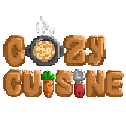

About This Piece
Cozy Cuisine is a pixel-art game where the player runs a food kiosk: buying ingredients, crafting dishes, and serving customers. I designed the game's interface end to end, including the main HUD, shop and basket screens, the crafting grid, and an item catalog, along with the game's marketing website.
The goal was a warm, inviting interface that stays readable at pixel scale and keeps every screen consistent, so the player can focus on cooking and serving instead of figuring out the menus.

Core gameplay flow: kiosk HUD, crafting, ingredient shop, and basket
Responsibilities in This Project
Overall game UI
Designed the main interface (kiosk HUD with profit goal, coins, order tickets, and on-screen movement controls), sub-interfaces (items, shop, basket), and functional screens (crafting grid with cook and clear actions), plus the interaction flow that connects them.
Clear, consistent style
Built interfaces and icons from the product and art direction so menus, tabs, panels, and food icons all read as one pixel-art world: same borders, same containers, same button states.
Specs and sliced assets
Delivered a UI Style Guide, a Component Behavior Guide, and an organized asset library with naming conventions, three-state buttons, sprite sheets, and frame data for animated elements.
Collaboration with the team
Worked alongside the project manager, game, front-end, back-end, and QA teammates so the designs could be implemented directly in the game and on the website.
Post-launch refinement
Documented hover, pop-up, transition, and loading behaviors so interactions can be tuned after release without redesigning screens.
Skills Showcased
Design Tools
Interface layouts, components, and prototypes built in Figma, with game-ready assets exported as sliced PNGs, sprite sheets, and GIFs.
Graphic & Icon Design
Custom pixel icons, food sprites, buttons, panels, and tabs, designed with consistent borders, spacing, and outlined and filled icon variants.
Layout & Color Theory
A limited five-color palette with clear hierarchy, so containers, text, and active states are easy to tell apart on every screen.
Interaction Design & User Flows
A logical loop the player can follow without instructions: take an order, buy ingredients, craft the dish, and serve the customer.
Adapting to an Art Style
Interfaces and icons built to match the game's pixel-art look, from the in-game menus to the website.
Motion Design
Animated UI elements including a swinging loading sign, a progress bar that fills with an ease-in curve, an idle cat sprite, and scale-in pop-ups.
Foundations
Color Palette
Type Scale
- Press Start 2P for titles and buttons (16–20px, uppercase)
- ByteBounce for in-game labels (12–14px)
- Pixel Arial 11pt for tooltips and subtext (10–12px)
Screens
Game UI

Website


Design Notes
Color & Typography
A warm brown and cream palette keeps the interface cozy and food-themed, while a single orange accent marks active states and key actions. Text meets a 4.5:1 contrast ratio, and icon-only buttons get tooltips so nothing relies on color or symbols alone.
Style Direction
Chunky bordered panels, tabbed menus, and pixel icons echo the game's art, so the UI feels like part of the world. Every button ships in normal, hover, and pressed states, pop-ups scale in over 200ms, and scene changes fade for a calm, steady pace.
Handoff & Motion
Assets follow a clear naming convention (btn_[name]_idle.png, icon_[name].png, popup_[name].png) and animated elements come as sprite sheets with JSON frame data, including the loading screen's swinging sign, progress bar, and idle cat.
Reading the Game at a Glance
The kiosk HUD keeps profit goal, coins, and the current order visible without covering the play area. Shop and crafting screens use large, consistent slots so ingredients and dishes can be recognized quickly.